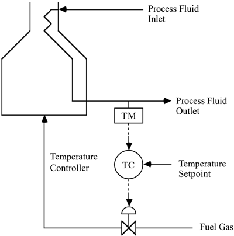
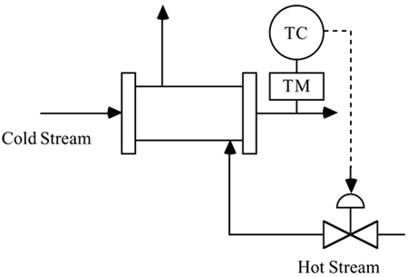
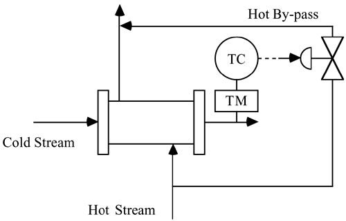
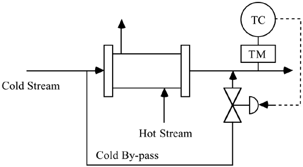

Student Exercises
| 1: | Discuss the following problems (a–g) in the context of control:
Identify control objectives; Identify input variables and classify as (a) manipulated or (b) disturbance; Identify output variables and classify these as (a) measured or (b) unmeasured; Identify constraints and classify as (a) hard or (b) soft; Identify operating characteristics and classify as (a) continuous, (b) batch, (c) semicontinuous (or semibatch); Discuss safety, environmental, and economic considerations; Discuss the types of control (feed forward or feedback).
Measurements and manipulated variables can vary continuously or may be sampled discretely.
Select from the following:
Driving a car Choose one of your favorite activities (skiing, basketball, making a cappuccino, etc.) A stirred tank heater Beer fermentation An activated sludge process A household thermostat Air traffic control
| | 2: | Literature Review. The process control research literature can be challenging to read, with unique notations and rigorous mathematical analyses. Find a paper from one of the magazines or journals listed in Section 1.4 that you would like to understand by the time you have completed this textbook. You will find many articles to choose from, so use some of the following criteria for your selection:
The process is interesting to you (do not choose mainly a theory paper) The modeling equations and parameters are in the paper (make certain the equations are ordinary differential equations and not partial differential equations) There are plots that you can verify (eventually) through simulation (the plots should be based on simulation results) The control algorithm is clearly written The objectives of the paper are reasonably clear to you
Provide the following:
A short (one paragraph) summary of the overall objectives of the paper; why are you interested in the paper? A short list of words and concepts in the paper that are familiar to you.
Suggested Topics (choose one):
Fluidized catalytic cracking unit (FCCU)—
petroleum refining
Reactive ion etching—
semiconductor manufacturing
Rotary lime kiln—
pulp and paper manufacturing
Continuous drug infusion—
biomedical engineering and anesthesia
Anaerobic digester—
waste treatment
Distillation—
petrochemical and many other industries
Polymerization reactor—
plastics
pH—
waste treatment
Beer production—
food and beverage
Paper machine headbox—
pulp and paper manufacturing
Batch chemical reactor—
pharmaceutical production
| | 3: | Instrumentation Search. Select one of the following measurement devices and use Internet resources to learn more about it. Determine what types of signals are input to or output from the device. For flow meters, what range of flow rates can be handled by a particular flow meter model?
Vortex-shedding flow meters Orifice-plate flow meters Mass flow meters Thermocouple-based temperature measurements Differential pressure (delta P) measurements Control valves pH
| | 4: | Work through the Module 1: Introduction to Matlab. | | 5: | A process furnace heats a process stream from near ambient temperature to a desired temperature of 300°C. The process stream outlet temperature is regulated by manipulating the flow rate of fuel gas to the furnace, as shown below. 
Discuss the objectives of this control strategy. What is the measured output? What is the manipulated input? What are possible disturbances? Is this a continuous or batch process? Is this a feed-forward or feedback controller? Should the control valve fail-open or fail-closed? For the strategy you chose, is the valve gain positive or negative? Why? Discuss safety, environmental, and economic issues. Draw the control block schematic diagram and label all signals and blocks on the diagram.
| | 6: | A fluidized catalytic cracking unit (FCCU) produces a significant portion of the gasoline produced by a typical petroleum refinery. A typical FCCU processes 30,000 Bbl/day (1 Bbl = 42 gallons) of heavy gas oil from a crude oil distillation unit, producing roughly 15,000 Bbl/day of gasoline, along with streams of other components. The value of gasoline alone produced by this unit is on the order of $500,000/day, so any improvement in yield and energy consumption owing to improved control can have a significant economic impact.
Question:
A control system revamp for a 30,000 Bbl/day FCCU is estimated to cost $2 million. It is expected that the implementation of advanced control schemes will result in an economic increase of 2% in the value of products produced. Based on the value of gasoline alone, how many days will it take to pay back the control system investment? | | 7: | Furnaces are often used to heat process streams to temperatures above 400°F. A typical fired furnace may have a heat duty of 100 x 106 Btu/hour, requiring roughly 1667 scfm (standard cubic feet per minute) of natural gas (methane has a fuel value of approximately 1000 Btu/scf). The cost of this fuel gas is on the order of $5/1000 scf, yielding an annual fuel cost of $4.4 million/year. Excess combustion air is needed to assure complete combustion; however, too much excess air wastes energy (the heated air simply goes out the exhaust stack). Too little excess air leads to incomplete combustion, wasting energy and polluting the atmosphere with unburned hydrocarbons. It is important, then, to deliver an optimum amount of combustion air to the furnace. With the large flow rates and high temperatures involved, maintaining safe operation is also very important. The control system must be designed so that excess combustion air is maintained, no matter what is happening to the fuel gas flow rate. A fired furnace control system clearly needs to satisfy safety, environmental, and economic criteria.
Question:
An advanced control scheme is estimated to save 2% in energy costs, for a fired furnace with a heat duty of 100 x 106 Btu/hour. If it is desired to have a 2-year payback period on this control system investment, what is the maximum investment allowable? | | 8: | Consider the surge vessel process in Example 1.3. If the steady-state volume is 500 liters, and the steady-state inlet and outlet flow rates are 50 liters/minute, find how the liquid volume varies with time if the inlet flow rate is Fi(t) = 50 + 10 sin(0.1t), while the outlet flow rate remains constant at 50 liters/minute. | | 9: | The human body is composed of many innate feedback and feed-forward control loops. For example, insulin is a hormone produced by the pancreas to regulate the blood glucose concentration. The pancreas in a type I (insulin dependent) diabetic has lost the ability to produce significant insulin. An insulin-dependent diabetic must monitor her/his blood glucose (accurate blood glucose strips have been on the market for years) and provide insulin injections several times per day. It is particularly important to use knowledge of the meal characteristics to determine the amount of insulin necessary to compensate for the glucose.
Discuss the actions taken by a type I diabetic in terms of the formulation of a control problem. State the objectives and list all variables, etc. It is desirable to form an automated closed-loop system, using a continuous blood glucose measurement and a continuous insulin infusion pump. Draw a "process and instrumentation" diagram and the corresponding control block diagram.
| | 10: | Consider the following three heat exchanger control instrumentation diagrams. For each diagram (a, b, and c), the objective is to maintain a desired cold stream outlet temperature. Since the cold stream exiting the exchanger is fed to a reactor, it is important that the stream temperature never be substantially higher than the setpoint value. Please answer the two basic questions about each strategy, then the final question (part d).
Basic cold stream temperature control strategy.  Is the process gain relating the manipulated flow rate to the measured temperature positive or negative? Should the control valve should be fail-open or fail-closed? Why? Temperature control using hot stream bypass strategy.  Is the process gain relating the manipulated flow rate to the measured temperature positive or negative? Should the control valve should be fail-open or fail-closed? Why? Temperature control using cold stream bypass strategy.  Is the process gain relating the manipulated flow rate to the measured temperature positive or negative? Should the control valve should be fail-open or fail-closed? Why? Which strategy (a, b, or c) will have the fastest dynamic behavior? Why?
| | 11: | During surgery it is important for an anesthesiologist to regulate a patient's blood pressure to a desired value. She does this by changing the infusion rate of vasoactive drugs to the patient. In addition to the effect of manipulated vasoactive drugs, blood pressure is affected by the level of anesthetic given to the patient. Discuss actions taken by an anesthesiologist in the context of feedback control. Sketch a control block diagram for an automated system that measures blood pressure and manipulates the infusion rate of a vasoactive drug. |
|